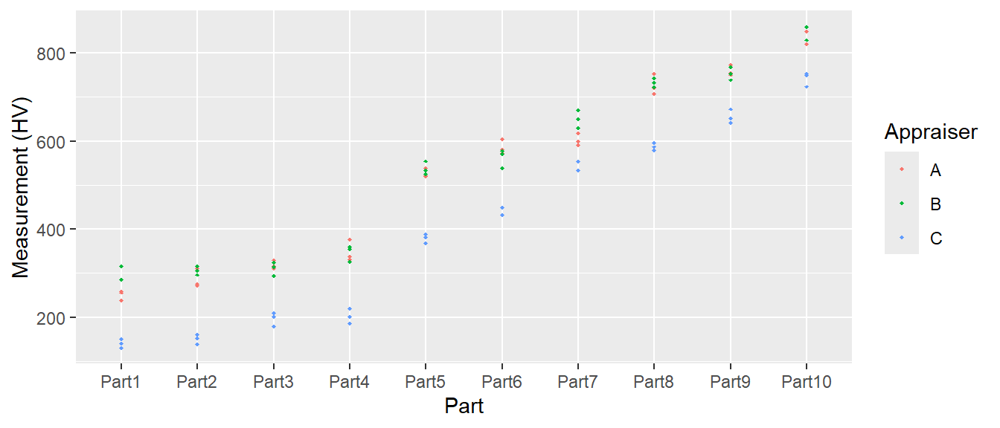
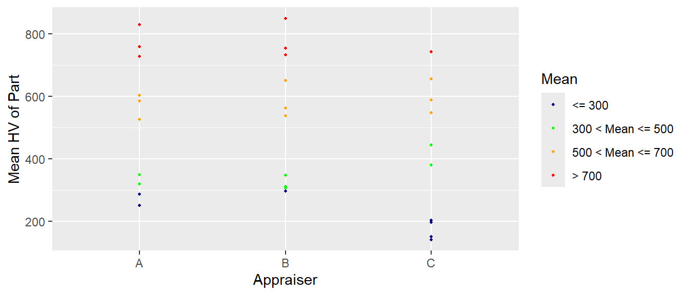
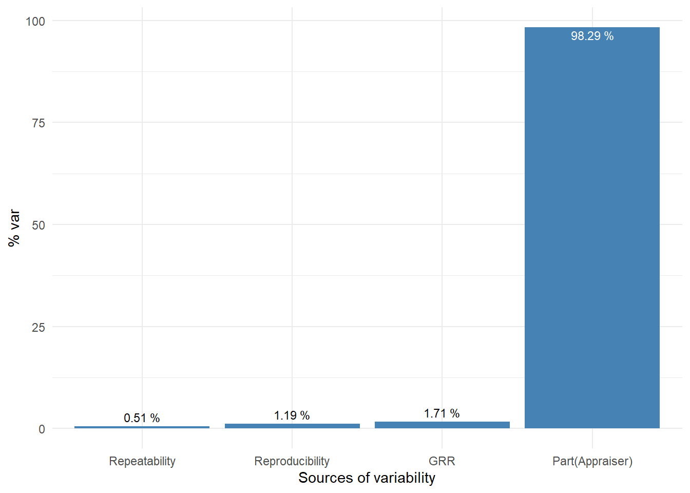
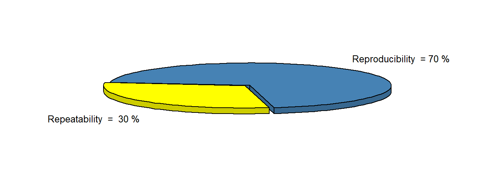
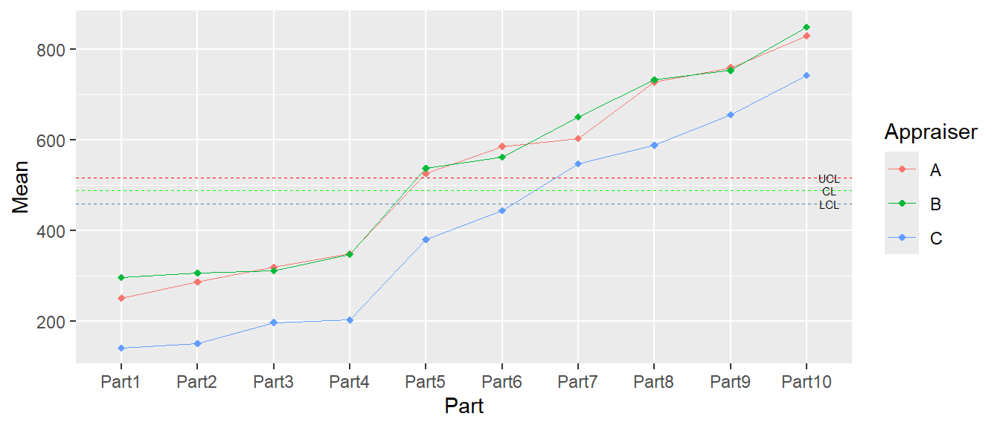
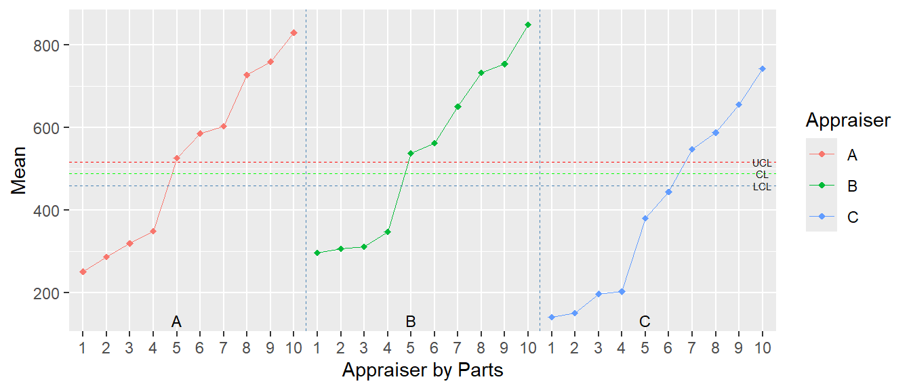
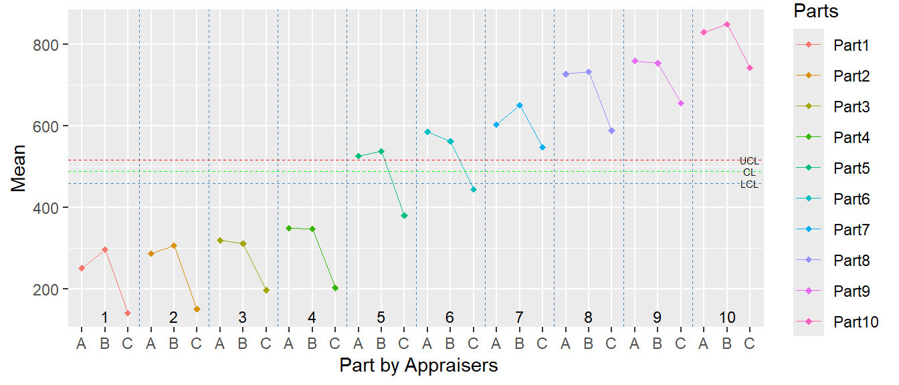
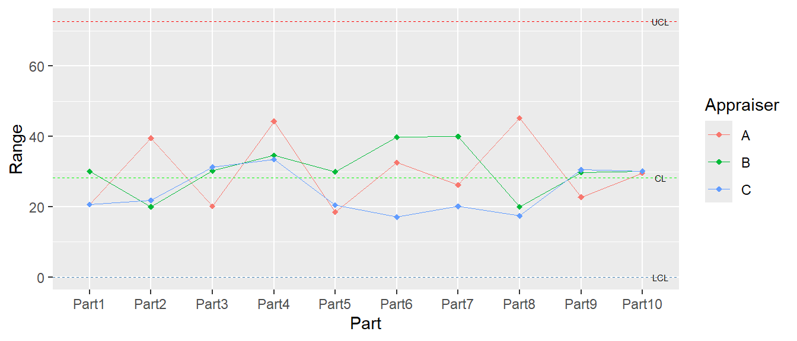
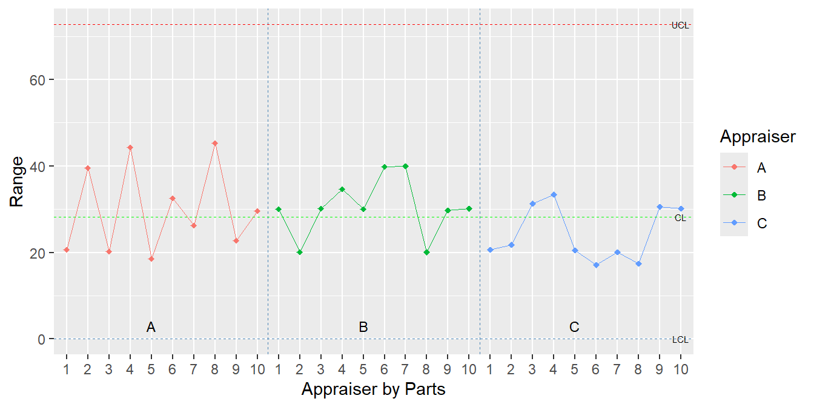
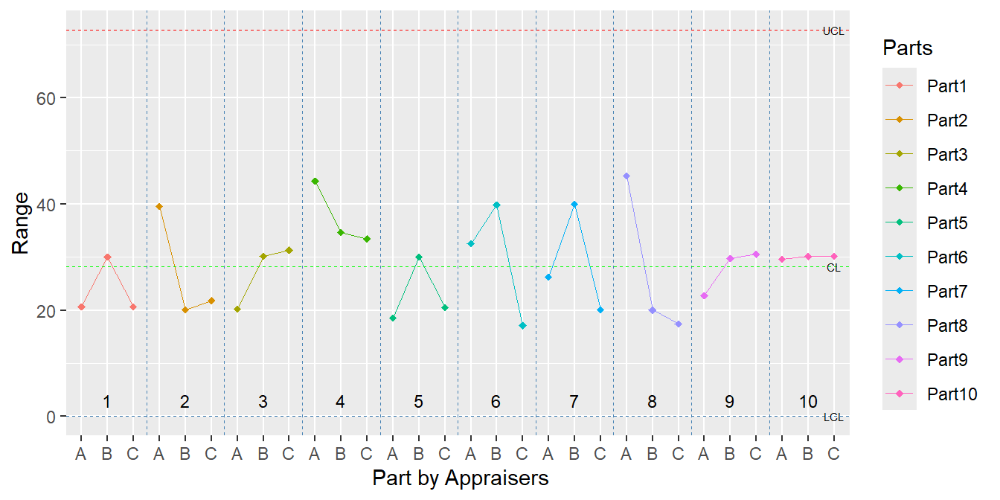

if (!require(magnittr)) {install.packages('magnittr',
repos="http://cran.us.r-project.org");
require(magnittr)}
if (!require(knitr)) {install.packages('knitr',
repos="http://cran.us.r-project.org");
require(knitr)}
if (!require(kableExtra)) {install.packages('kableExtra',
repos="http://cran.us.r-project.org");
require(kableExtra)}
if (!require(ggplot2)) {install.packages('ggplot2',
repos="http://cran.us.r-project.org");
require(ggplot2)}
if (!require(plotrix)) {install.packages('plotrix',
repos="http://cran.us.r-project.org");
require(plotrix)}
if (!require(car)) {install.packages('car',
repos="http://cran.us.r-project.org");
require(car)}
if (!require(grid)) {install.packages('grid',
repos="http://cran.us.r-project.org");
require(grid)}Problem to solve
The problem is about how precise a Vickers hardness measurement system is. Here, precision means repeatability and reproducibility.
Repeatability is the variability due to the instrument. It is the variability observed when the same operator measures the same quantity repeatedly with the same instrument.
Reproducibility is the variability due to the operator (appraiser) and the interaction between the operator (appraiser) and the object being measured. It is the variability observed when different appraisers measure the same parts with the same instrument.
The total variability introduced by repeatability and reproducibility, expressed as a percentage of the variability of a process or measurement range, is described by the so-called %GRR (%Gage Repeatability & Reproducibility), a measure of the precision of a measurement system.
Measurement system
A measurement system is an arrangement of the following factors:
- the measurand and its range of variation,
- the method of measurement,
- the measurement procedure,
- a measuring instrument or device and other accessories,
- the measurement environment,
- the operator (appraiser) or operators (appraisers).
In order to diagnose the actual state of the measurement system, the measurements should be performed under the same conditions as the actual ones, in the same way and by the same operators. The measurements are organised and carried out by the GRR test supervisor, who should not participate directly in the measurements.
Method of solution
The use of analysis of variance (ANOVA) methods in precision testing allows an accurate assessment of which factor and to what extent is responsible for the variability in measurement results. In addition to repeatability and reproducibility, the variability in measurement results is introduced by the objects (parts) being measured and this should account for the vast majority of the variability observed in the measurements.
Hardness measurements are unique (destructive), so different operators cannot measure the same spots on objects exactly. This means they are nested within each operator. In nested systems, there is no interaction between the operator and the objects being measured. An analysis of variance for nested systems has been used to analyze this.
The analysis is based on:
MEASUREMENT SYSTEMS ANALYSIS. Reference Manual. Fourth Edition, 2010, Chrysler Group LLC, Ford Motor Company, General Motors Corporation
Donald J. Wheeler, An honest Gauge R&R Study, 2006 ASQ/ASA Fall Technical Conference, Manuscript No. 189
https://www.itl.nist.gov/div898/handbook/ppc/section2/ppc233.htm
Acceptance criteria for measurement systems analysis
The AIAG criteria, with adjustment for total variance as the reference level, were used based on how the problem was solved:
- %GRR < 1% - high measurement system capability,
- 1% < %GRR < 9% - conditionally acceptable measurement system,
- %GRR > 9% - unacceptable measurement system.
Another indicator of the measurement system is the so-called effective resolution of the measurement system \(ndc\) (number of distinct categories), calculated in classical GRR analysis as follows:
\(ndc= \sqrt{2} \frac{σ_{Part(Appraiser)}}{σ_{GRR}}\),
where \(σ_{Part(Appraiser)}\) is standard deviation of the part nested in appraiser and \(σ_{GRR}\) means standard deviation due to GRR. The effective resolution of the measurement system is the number of different categories that the measurement system can reliably differentiate, calculated as the number of non-overlapping intervals with approximately 97% confidence. It examines the ability of the measurement system to detect differences between samples.
The following criterion for \(ndc\) is commonly used:
- \(ndc\) > 5 - resolution is adequate,
- 2 < \(ndc\) < 5 - very low resolution of the system;
- \(ndc\) < 2 - unacceptable resolution.
In the modern analysis of measurement systems, called EMP (Evaluating the Measurement Process), the AIAG criteria are considered too conservative. EMP proposes a criterion of system capability based on the \(ICC\) (Intraclass Correlation Coefficient), defined as follows:
\(ICC= \frac{({σ_{Part(Appraiser)}})^2}{TV}\) ,
where \(TV\) means the total variance. The \(ICC\) describes what part of the total variance is the variance describing the variability of the measured objects. The \(ICC\) coefficient value is the basis for the classification of the system in accordance with the Table 7.
In the EMP approach, the probable error can be treated as a measure of the precision of the measurement system. The probable error can be calculated as
\(PE = 0.675\ GRR\),
where GRR is the estimated standard deviation of the measurement system.
All calculations were performed in R (RStudio).
Packages used
Results of measurements
Reading data
appraiser_A <- read.csv2("Appraiser_AAA.csv")
appraiser_B <- read.csv2("Appraiser_BBB.csv")
appraiser_C <- read.csv2("Appraiser_CCC.csv")
row.names(appraiser_A) <- c("Trial1:","Trial2:","Trial3:")
row.names(appraiser_B) <- c("Trial1:","Trial2:","Trial3:")
row.names(appraiser_C) <- c("Trial1:","Trial2:","Trial3:")The Vickers hardness scale is very wide, from about 100HV to over 900HV. Ten parts were selected to test the measurement system. The three operators did three trials each. The measurement results are presented below.
| Part1 | Part2 | Part3 | Part4 | Part5 | Part6 | Part7 | Part8 | Part9 | Part10 | |
|---|---|---|---|---|---|---|---|---|---|---|
| Trial1: | 255.93 | 275.63 | 315.20 | 331.83 | 519.73 | 580.20 | 591.50 | 720.53 | 750.47 | 821.23 |
| Trial2: | 238.23 | 271.77 | 310.03 | 337.83 | 521.17 | 571.93 | 598.97 | 708.07 | 755.40 | 849.73 |
| Trial3: | 258.87 | 311.36 | 330.25 | 376.13 | 538.28 | 604.50 | 617.76 | 753.34 | 773.23 | 820.12 |
| Part1 | Part2 | Part3 | Part4 | Part5 | Part6 | Part7 | Part8 | Part9 | Part10 | |
|---|---|---|---|---|---|---|---|---|---|---|
| Trial1: | 286.20 | 296.50 | 294.23 | 325.43 | 524.70 | 538.53 | 670.37 | 722.83 | 738.80 | 829.77 |
| Trial2: | 286.28 | 306.10 | 314.45 | 360.12 | 534.32 | 578.34 | 630.39 | 742.87 | 752.81 | 859.89 |
| Trial3: | 316.24 | 316.56 | 324.43 | 355.25 | 554.72 | 570.67 | 650.21 | 732.27 | 768.56 | 859.45 |
| Part1 | Part2 | Part3 | Part4 | Part5 | Part6 | Part7 | Part8 | Part9 | Part10 | |
|---|---|---|---|---|---|---|---|---|---|---|
| Trial1: | 140.20 | 160.50 | 210.23 | 219.43 | 388.70 | 432.53 | 534.37 | 586.83 | 672.80 | 753.77 |
| Trial2: | 151.21 | 152.58 | 201.17 | 200.79 | 368.18 | 448.62 | 554.24 | 596.79 | 652.10 | 750.36 |
| Trial3: | 130.56 | 138.68 | 178.89 | 185.98 | 381.81 | 449.62 | 554.46 | 579.39 | 642.27 | 723.61 |
Measurements
Figure 1 shows all measurements. Figure 2 shows the average for each part obtained by each appraiser.


ANOVA analysis
Anova for nested measurements was used to solve the problem. The result is presented in the ANOVA table.
model <- lm(formula = measurement ~ Appraiser + Appraiser:Part,
data = measurements)
anov <- Anova(model, type = "II")
anovAnova Table (Type II tests)
Response: measurement
Sum Sq Df F value Pr(>F)
Appraiser 311774 2 647.36 < 2.2e-16 ***
Appraiser:Part 3753853 27 577.37 < 2.2e-16 ***
Residuals 14448 60
---
Signif. codes: 0 '***' 0.001 '**' 0.01 '*' 0.05 '.' 0.1 ' ' 1ANOVA table
The F column of the ANOVA table (Table 4) contains the Snedecor statistic for comparisons against the MSS for repeatability. The \(p\) column shows the significance level against this quantity. The first value in column F1 represents the ratio of MSS for Appraiser and MSS for Part(Appraiser). Consequently, \(p1\) represents the significance level attributed to the Appraiser in comparison to the Part.
| Source | df | SS | MSS | F | p[%] | F1 | p1[%] | |
|---|---|---|---|---|---|---|---|---|
| MSO | Appraiser | 2 | 311773.96 | 155886.9776 | 647.36 | 0 | 1.12 | 34.1 |
| MSP(O) | Part(Appraiser) | 27 | 3753852.72 | 139031.5824 | 577.37 | 0 | 577.37 | 0.0 |
| MSE | Repeatability | 60 | 14448.15 | 240.8024 | NA | NA | NA | NA |
| SST | Total | 89 | 4080074.83 | NA | NA | NA | NA | NA |
GRR table
Table 5 (GRR table) shows the variance (var), the standard deviation (sig) and the percentage of the total variance (%var) for each of the components of total variance. The graphical representation can be seen in the following Figure 3. Figure 4 shows the percentage of GRR components.
| var | sig | 6sig | %6sig | %var | |
|---|---|---|---|---|---|
| Repeatability | 240.80 | 15.52 | 93.11 | 7.15 | 0.51 |
| Reproducibility | 561.85 | 23.70 | 142.22 | 10.93 | 1.19 |
| GRR | 802.65 | 28.33 | 169.99 | 13.06 | 1.71 |
| Part(Appraiser) | 46263.59 | 215.09 | 1290.54 | 99.14 | 98.29 |
| Total | 47066.24 | 216.95 | 1301.69 | 100.00 | 100.00 |


Effective resolution
ndc <- sqrt(2) * GRR_table[4,2]/GRR_table[2,2]
ICC <- GRR_table[4,1]/GRR_table[5,1]
PE <- 0.675*GRR_table[3,2]Number of distinct categories:
ndc = 13
Intraclass correlation coefficient:
ICC = 0.983
Probable error:
PE = 19Limits for average values and ranges
The limits in the Table 6 were determined using Table 8 as in the classical GRR analysis. UCL means upper control limit, CL - center line, LCL - lower control limit.
| UCL | CL | LCL | |
|---|---|---|---|
| Limits for average values: | 517 | 488 | 459 |
| Limits for ranges: | 73 | 28 | 0 |
Conclusions
From the ANOVA table it can be concluded that both the variability introduced by the appraisers and the variability introduced by the parts are statistically significant compared to the variability due to repeatability (residuals or repeatability in the ANOVA table), since the probabilities \(p\) are much lower than 0.05, practically equal to zero. Table 4 shows that the appraiser introduced variability is not statistically significant compared to the variability due to the parts (\(p\) > 0.05), whose share in the total variability is equal to 98.29% (Fig. 3).
The share of GRR in the total variability is 1.71%, so according to the AIAG criterion the measurement system can be considered as conditionally acceptable, but according to the EMP approach \(ICC\) = 0.983, which means that the measurement system is in the I class (Table 7).
The \(ndc\) (number of distinct categories) factor is equal to 13, which means that the tested Vickers hardness measurement system is capable of distinguishing 13 measurement ranges in the entire available scale.
The probable error PE, calculated using the EMP approach, is approximately 20HV. This value can be considered as the effective resolution of the measurement system.
The most important part of the GRR is the reproducibility (70%). This means that the operator variability is too high. From the graphs in Appendix A it can be seen that the measurements made by Operator C are significantly lower than those of Operators A and B. The situation should be analysed and perhaps additional training should be proposed to reduce the differences.
The Range graphs are almost the same for all operators. There are no significant differences. All Ranges are between the LCL and UCL limits. The process of measurement is consistent and predictable.
The range between the LCL and UCL on the Mean charts in Figures 5, 6 and 7 represents the measurement error. All points on the Mean charts are outside the control limits. This means that the measurements are very good and not masked by measurement error.
Appendix A
Graphs for average values



Graphs for ranges



Appendix B
| ICC | Class of the system | Attenuation of proces signal |
|---|---|---|
| 0.8 - 1.0 | I | < 10% |
| 0.5 - 0.8 | II | 10% - 30% |
| 0.2 - 0.5 | III | 30% - 55% |
| 0.0 - 0.2 | IV | >55% |
| kk | A2 | D3 | D4 |
|---|---|---|---|
| 2 | 1.880 | 0.000 | 3.267 |
| 3 | 1.023 | 0.000 | 2.575 |
| 4 | 0.729 | 0.000 | 2.282 |
| 5 | 0.577 | 0.000 | 2.115 |
| 6 | 0.483 | 0.000 | 2.004 |
| 7 | 0.419 | 0.076 | 1.924 |
| 8 | 0.373 | 0.136 | 1.864 |
| 9 | 0.337 | 0.184 | 1.816 |
| 10 | 0.308 | 0.223 | 1.777 |